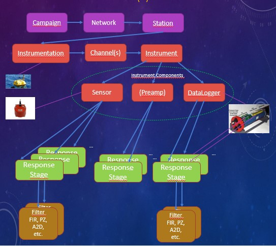

Obsinfo Overview
Introduction
obsinfo is a Python standalone application for creating FDSN-standard (StationXML) data and metadata for ocean bottom seismometers using standardized, easy-to-read information files in YAML or JSON formats. The advantages of obsinfo are the following:
Easier input user format, as YAML and JSON syntax is simpler than XML
Flexibility to change configurations avoiding rewriting or modifying a new StationXML file each time (DRY, don’t repeat yourself)
Avoiding redundancy
Extreme autonomy of operation from Internet connections, being text-based
Adapting StationXML to OBS-specific functionality
Simple interface to other systems, such as AROL-based Yasmine
Unlike general systems like Yasmine/AROL, obsinfo is conceived to reflect the vast variability of OBS equipment and the fact that changes on the field are common and cannot be planned in advance. Emergency procedures such as changing an equipment component or a stage in the high seas need to be taken into account. The fact that the editing of information needs to occur without necessarily a connection to a central database is a consideration too. Therefore, the choice has been made to avoid a GUI such as Yasmine and make obsinfo totally text-based using regular files. At the same time, every effort has been made to stay compatible with AROL, which is based on an earlier version of obsinfo itself, v0.106, so AROL yaml files can be imported into obsinfo. However, as of this publication, some differences exist which are documented here.
Lack of redundancy and reusability is achieved by creating a repository of instrumentations which is referenced time and again by different campaigns. Flexibility is achieved by permitting these instrumentations to have several selectable configurations. as well as the ability to make punctual changes to any field via channel modifications (see Advanced Topics).
Object Model
The reference manual is organized around the object model, in pages that describe each particular class. The object hierarchy starts in Class Network. You can navigate from one class to the other by using the Relationships section.
Information Files
The system is based on “information files” in JSON or YAML format as input, filled in by appropriate actors and broken down into different categories to remove redundancy and simplify input as much as possible. Information files are taken as input and converted first to an obsinfo object, which in turn gets converted to an obs_py object, finally output as a StationXML file.
There are 6 main file types:
Name |
Description |
Filled by |
When filled |
|---|---|---|---|
campaign |
Lists of stations facilities and participants, plus desired verification. NOT NEEDED FOR PROCESSING |
Chief scientist |
after a data collection campaign |
network |
Deployed stations, their instruments and parameters |
OBS facility |
after a campaign |
instrumentation |
Instrument description |
OBS facility |
new/changed instruments |
|
Description of basic components |
OBS facility -or- component manufacturer |
when there are new are new components or calibrations |
response_stage |
Description of stages digitizers, amplifiers/filters) |
OBS facility -or- component manufacturer |
when there are new components or calibrations |
filter |
Description of filters amplifiers and digitizers used in stages |
OBS facility -or- component manufacturer |
when there are new components or calibrations |
Only the campaign and network files are OBS-specific. The instrumentation files and their subfiles could be replaced by existing standards such as RESP files or the NRL (Nominal Response Library), but obsinfo provides a simpler and more standards-compliant way to specify the components, and it can automatically calculate response sensitivities based on gains and filter characteristics (using obsPy). obsinfo instrumentation files could also be used to make RESP-files and NRL directories, if so desired.
File Hierarchy
It is recommended to arrange the information files in a file hierarchy such as this:
/authors (contains files used in headers of other information files)
/network
/instrumentation
/sensors
/preamplifiers
/dataloggers
[/instrumentation_componenent]/stages
[instrumentation_componenent]/stages/filters
where [instrumentation_componenent] = sensors, preamplifiers or dataloggers.
The hierarchy is completely up to the user, including the names of the folders/directories. In fact, it is perfectly possible to put all the information in a single file, although it is not recommended as reusability of filters, stages or components depends on independent files.
To reference a file from within another file, use the JREF syntax:
authors: - {$ref: "../authors/Wayne_Crawford.author.yaml#author"}
The effect of this directive is at the core of the philosophy of obsinfo, as it is this mechanism which allows reuse: it substitutes the content
of the key author within the file ../authors/Wayne_Crawford.author.yaml as the value of the key authors. If you want to include the complete file, remove the #author anchor.
File Naming Convention
While there is flexibility about the folder hierarchy, information files must follow the following naming convention:
<descriptive file name>.<obsinfo file type>.<file format>
where
<descriptive file name> usually includes vendor and configuration shorthand to make the file easily identifiable by users,
<obsinfo file type> is one of
campaign,network,instrumentation,sensor,preamplifier,datalogger,stage,filter<file format> is one of
yml,yamlorjson.
Examples:
TI_ADS1281_FIR1.stage.ymlis a stage with a Texas Instruments FIR filter nested in it, in YAML format.BBOBS.INSU-IPGP.network.jsonis a network of broad-band stations deployed by INSU IPGP, in JSON format.
There are three resources to look up the exact syntax for each information file. One is the Introduction which takes you step by step building a typical hierarchy of information files. The different Classes pages have a complete explanation of all the attributes in the class. Unless otherwise noted, attributes in the file have the same syntax as attributes in the class. The third resource is the formal syntax of the file, which is a JSON schema, which is always referenced in the Class page.
File Metadata
All information files contain common metadata
format_version:- This is a required field. It reflects the template version against which this file must be validatedrevision:- Revision information (date in particular) to keep change control of file.date:- date of revisionauthors:- authors of revision, usually a reference to an author file
notes:- Optional extra information which will not be put in final metadata.yaml_anchors:- YAML anchors to avoid redundancy, for advanced YAML users. Here is a guide on how to use YAML anchors.
Python architecture
Executables
The following command-line executables perform the main tasks:
makeSTATIONXML: generates StationXML files from a network + instrumentation information files
$ python3 makeStationXML -h
displays all the options of makeStationXML.
To create a StationXML file from a file called <filename>, type:
$ python3 makeStationXML.py [options] filename
obsinfo-validate: validates an information file against its schemaobsinfo-print: prints a summary of an information file
The following command-line executables make scripts to run specific data conversion software:
obsinfo-make_LCHEAPO_scripts: Makes scripts to convert LCHEAPO data to miniSEEDobsinfo-make_SDPCHAIN_scripts: Makes scripts to drift correct miniSEED data and package them for FDSN-compatible data centers
Package and Modules
The package name is obsinfo
obsinfo.main contains code to initialize the main obsinfo routine, to read and potentially validate main (network) information file and to write StationXML file
obsinfo.network and obsinfo.instrumentation contain the main code to process the corresponding
information files.
obsinfo.OBSMetadata contains code to read and validate information files in either YAML or JSON formats.
obsinfo.misc contains miscellaneous code, currently deprecated and unsupported, which is not used anymore in the application
obspy.addons contains modules specific to proprietary systems:
obspy.addons.LCHEAPOcreates scripts to convert LCHEAPO OBS data to miniSEED using thelc2mssoftwareobspy.addons.SDPCHAINcreates scripts to convert basic miniSEED data to OBS-aware miniSEED using theSDPCHAINsoftware suiteobspy.addons.OCAcreates JSON metadata in a format used by the Observatoire de la Cote d’Azur to create StationXML
Auxiliary subdirectories
obsinfo/data/schema
data/schema contains JSON Schema for each file type.
obsinfo/_examples/
Contains example information files and scripts:
_examples/Information_Filescontains a complete set of information files_examples/Information_Files/networkcontains network files_examples/Information_Files/instrumentationcontains instrumentation, instrument_components, response and filter files.
_examples/scriptscontains bash scripts to look at and manipulate these files using the executables. Running these scripts is a good way to make sure your installation works, looking at the files they work on is a good way to start making your own information files.
obsinfo/tests/
Contains test cases and code using unittest.py. The tests are performed either on the information files under test/data or on _examples.
Resources
Installation and Startup Guide <InstallStartup>
Tutorial <Tutorial1>
Class Reference Pages <class11>
Information File Templates <FILE>
For the YAML specification, see YAML . For a tutorial, see YAML Tutorial
For the JSON specification, see JSON . For a tutorial, see JSON Tutorial
For the JREF notation, see JREF Notation
For the StationXML reference, see FDSN StationXML Reference
Comments on versioning
We use standard MAJOR.MINOR.MAINTENANCE version numbering but, while the system is in prerelease:
MAJOR==0
MINOR increments every time the information file structure changes in a non-backwards-compatible way
MAINTENANCE increments when the code changes or the file structure changes in a backwards-compatible way
Current version: v0.110